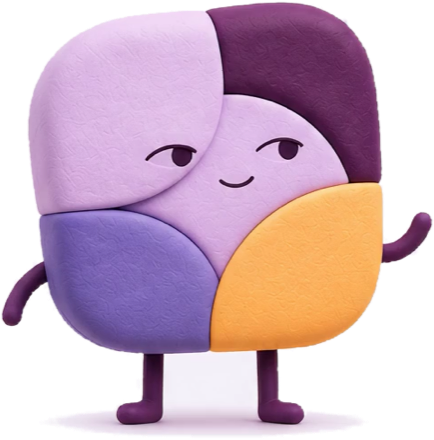

Mosaic tile
One day, one tile. A filled sector means you recorded something in that category that day.
Log your cycle, symptoms, labs and medication in seconds. Pattern Journal lines everything up since your last appointment and turns it into a clear PDF you can bring to your doctor. Everything stays on your iPhone.
Download on the App Store
No quiz, no streaks. Skip a day and nothing breaks.
A quick daily check-in with scales you choose yourself, plus bleeding, symptoms, labs and doses whenever they happen.
Every day becomes a tile with four sectors: cycle, wellbeing, labs, medication. Two weeks at a glance.
Pick the period since your last visit, tick what to include, add your questions and share a one-file summary.
Built for long and irregular cycles. Pattern Journal describes what you logged and never guesses a 28-day date.
One day, one tile. A filled sector means you recorded something in that category that day.
Enter each result with its unit and the reference range printed by your lab. Attach the original report.
Start dates, dose changes and doses taken. A change adds a new event; earlier history stays as it was.
Set the date of your last appointment and see everything you logged since then, in order.
A summary of your own records with “My questions for the doctor”. Made on your iPhone, shared only when you choose.
Progress photos live in a private space inside the app, never in your photo library, and stay out of the PDF unless you pick them.
Lock the diary with Face ID. Content is hidden in the app switcher.
Plum and Midnight dark themes, alternate app icons, gentle haptics and sounds.
Your health story is yours. Pattern Journal has no servers to send it to.
No. Pattern Journal shows the observed range and median of your past cycles. It describes what happened, it is not a forecast, and it never assumes a 28-day cycle. Long gaps are marked for you to check.
No. You enter each value exactly as printed, with its unit and your lab's reference range, and the app keeps them together. It does not interpret results; that conversation belongs with your doctor.
Only on your iPhone. There is no account and no cloud sync. To move to a new phone, create an encrypted backup with your own passphrase. Without the passphrase the file cannot be opened, not even by us.
Only what you choose: a period (for example since your last visit), the categories and records you tick, and your own questions. Photos stay out unless you select them. The PDF is made on your device and leaves it only through the share sheet.
Recording, viewing, export, backup, the lock and your first PDF summary are included for everyone. Pro adds lab trend charts, comparing periods around medication changes and further PDF summaries. Prices are shown in the App Store before you buy.